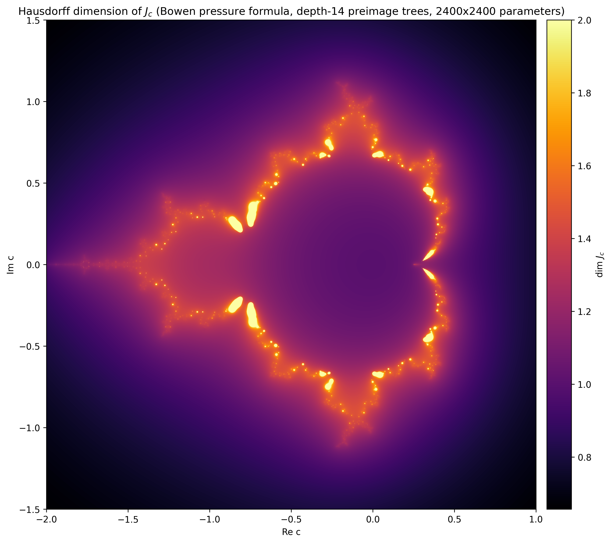

Mandelbrot Escape Potential
The Douady–Hubbard potential of the Mandelbrot set, computed by direct iteration.
The Mandelbrot set is the set of parameters $c$ for which the orbit of $z_{n+1} = z_n^2 + c$, started at $z_0 = 0$, remains bounded. Rather than coloring points by escape time, this script computes the escape potential
$$G(c) \;=\; \lim_{n \to \infty} \frac{1}{2^{\,n}} \log\lvert z_n \rvert ,$$
the Green's function of the complement of the set with a pole at infinity. $G$ vanishes on the set itself and grows smoothly away from it, so its level sets trace the equipotential curves that foliate the exterior — the same structure used in the Douady–Hubbard proof that the Mandelbrot set is connected. Numerically, the limit converges quickly: after $n$ iterations, $2^{-n}\log\lvert z_n\rvert$ is already an excellent approximation for any orbit that has escaped.

Hausdorff dimension of $J_c$ across parameter space
Each parameter $c$ also defines a Julia set $J_c$ — the boundary between bounded and escaping orbits of $z \mapsto z^2 + c$ in the dynamical plane — and its Hausdorff dimension varies with $c$. The map below assigns to every point of the parameter plane the dimension of its Julia set, computed via Bowen's formula: $\dim J_c$ is the unique $s$ at which the topological pressure of $-s \log\lvert f_c' \rvert$ vanishes,
$$P\!\left(-s \log\lvert f_c' \rvert\right) = 0 .$$
The pressure is evaluated on depth-14 backward-orbit trees of the repelling fixed point $\beta$, using the growth rate of the transfer-operator sums $\sum_{f_c^n(z) = \beta} \lvert (f_c^n)'(z) \rvert^{-s}$ rather than box counting of rendered pixels (which systematically inflates the dimension of exterior Cantor dust, since the gaps in the dust fall below pixel resolution). The method reproduces the known anchors: $\dim J_0 = 1$ exactly for the circle, $\approx 1.268$ for the basilica $(c = -1)$, and $\approx 1.39$ for Douady's rabbit. The dimension exceeds 1 not only inside the Mandelbrot set but also in the exterior dust near the boundary (e.g. near Misiurewicz points such as $c = i$), and falls toward the polynomial-lemniscate limit of smooth equipotentials far away.

Source code
- mandel.py — the escape-potential computation
- render_dimension.py — parallel renderer for the Julia-dimension parameter map
- mandel_viewer.py — the interactive Mandelbrot/Julia viewer module the renderer imports (save it as
mandel.pynext to the renderer)